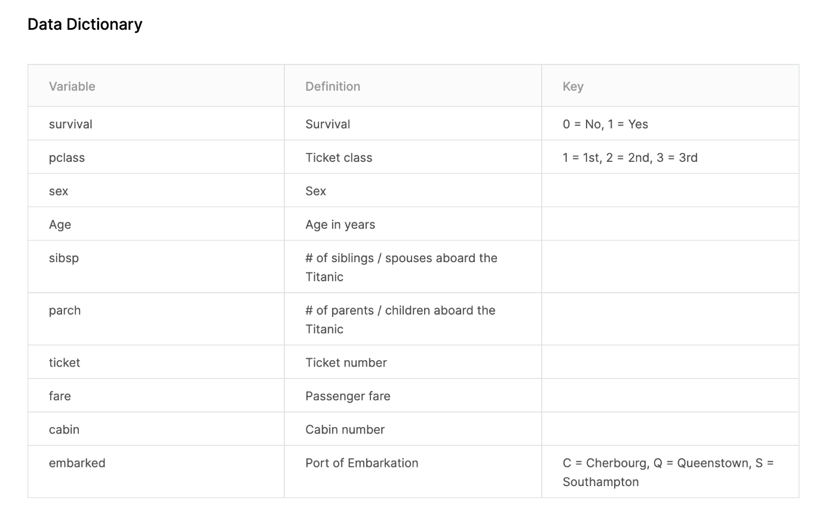

Clase 1 - Introducción
Material
https://youarenotsosmart.com/2019/07/20/yanss-158-the-science-behind-why-we-find-a-b-testing-icky-when-it-comes-to-policies-practices-medicine-and-social-media/
- Libro que es un poco mas avanzado pero sigue siendo muy sencillo: https://jakevdp.github.io/PythonDataScienceHandbook/
- Sobre ciencia y datos les recomiendo este debate, está vinculado a lo que hablamos al principio: https://www.wired.com/2008/06/pb-theory/
- Respuesta: https://norvig.com/fact-check.html
- “But to be clear: the methodology still involves models. Theory has not ended, it is expanding into new forms. Sure, we all love succinct theories like F = m a. But social science domains and even biology appear to be inherently more complex than physics. Let's stop expecting to find a simple theory, and instead embrace complexity, and use as much data as well as we can to help define (or estimate) the complex models we need for these complex domains."
- Todo esto va de la mano del famoso paper de Anderson llamado “More is different” https://science.sciencemag.org/content/177/4047/393
Que es uno de los puntapié iniciales para armar modelo estocásticos o deterministas caoticos complejos
- Para cerrar, esta es la introducción al Feller. el mejor libro para empezar a aprender seriamente la probabilidad. Es de 1968. para que se den una idea fuera de la unión soviética en 1950 nadie le daba bola a la probabilidad. se lo tomaban como un juguete poco serio los matemáticos. A lo sumo algunas cosas muy sencillas de estadística. hoy en día es una pieza fundamental de la ciencia y de gran parte de los modelos de machine learning y data science que hay detrás de las páginas webs y de casi todo lo que hacemos. es algo muy nuevo y está en pañales, no hay que tener miedo en meterse. es difícil pero con tiempo y ganas se puede aprender mucho, todavía hay muy poca gente que realmente sabe.
Tarea
- Leer y evaluar errores del texto de la carne:
http://revistaanfibia.com/ensayo/comer-carne-derecha/
Si los valores de una variable se modifican de manera sistemática con respecto a los valores de otra, se dice que ambas variables se encuentran correlacionadas.
Es importante tener en cuenta que la existencia de una correlación estadística entre dos eventos no implica que haya una conexión causal entre ellos.
La muestra no es representativa porque no todas las personas tienen la posibilidad de participar de las encuestas que hizo, por ende no se puede sacar conclusiones de dicha población.
Un artículo que habla de este problema:
https://medium.com/@fernandezpablo/sobre-poblaciones-muestras-y-representatividad-57b178e7b74
- Colab introductorio:
https://colab.research.google.com/drive/13DLYOxmKPsyfxZgzEmApzRibEy1qe2ne#scrollTo=KJXe66ADZG9h
Formato de la data de Titanic:

A) Modificar en colab el código para ver qué pasa si se incorpora la edad como variable al modelo del titanic:
- Sin Age: 0.6641697877652933
- Con Age: 0.731585518102372
B) Intentar correr ejemplo de tpot automl con los datos del titanic
Usando los mismos X e Y train y test:
Best pipeline: DecisionTreeClassifier(input_matrix, criterion=gini, max_depth=4, min_samples_leaf=1, min_samples_split=9)
0.6895261845386533